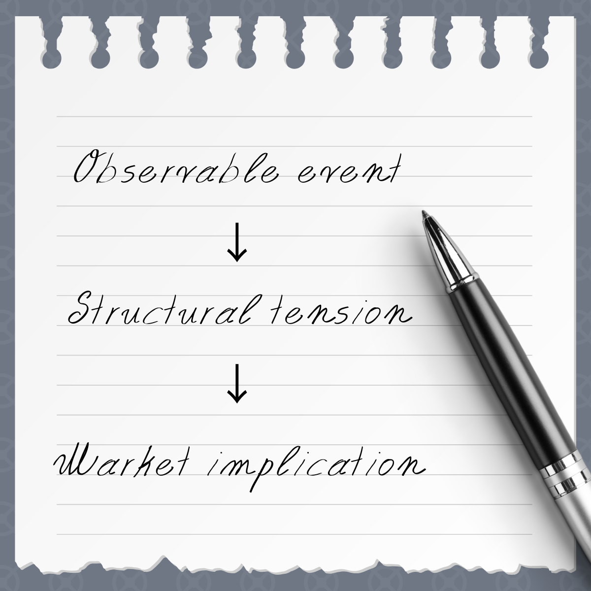
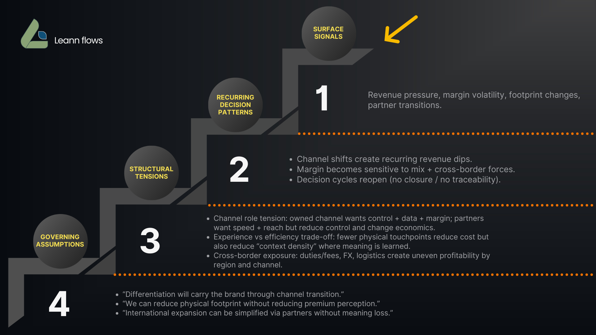

Growth-stage brands stall not because of bad products but because their brand structure no longer reflects what they have become. I diagnose the structural tension and return a decision-grade written brief. No calls. No retainers.
"The market doesn't misunderstand you. It reads you exactly as you're structured."
Most brand consultants respond to what they can see. I work one layer deeper. Every observable event — a pricing hesitation, a team misalignment, a message that stopped landing — points to a structural tension underneath. I trace that tension to its governing assumption, then build the brief around what actually needs to change.

Revenue continues growing. New channels continue performing. Yet leadership feels increasingly uncertain about future expansion.
Growth has outpaced the structure originally designed to support it.
Expansion decisions become slower, riskier, and increasingly reactive.
The product is well reviewed. Repeat customers remain loyal. New customers hesitate at the price point.
The brand's value is experienced after purchase, but poorly communicated before purchase.
Customer acquisition costs rise while conversion rates decline.
Positioning discussions never seem to end. Different departments describe the brand differently.
The organization is operating from multiple brand definitions simultaneously.
Execution slows. Alignment weakens. Market signals become harder to interpret.
The diagnosis traces from what you can already see on the surface down to the governing assumptions beneath. Each layer reveals what the layer above is actually caused by.

No discovery calls. No workshops. You send me your brand materials and I diagnose the structural tension, then return a decision-grade written brief with clear options and guardrails. Designed for founders and brand leads who think in clarity, not consensus.
Email me the brand and the transition you're navigating. I'll reply with scope and next steps. No intake call required.
You share your brand assets: positioning docs, website, campaigns. I read everything before writing a single word. No meetings.
A 7–9 page written diagnosis of where your brand structure has drifted, with clear options, decision gates, and guardrails to stop the same tensions from resurfacing.
A 7–9 page written diagnosis. Not a strategy deck. Not a brand guide. A precise structural reading of where your brand has drifted from its core intent and what that drift is costing you in decisions, alignment, and market position.
The brief is designed for brands with 50 to 200 employees navigating expansion complexity, internal misalignment, or decision fatigue where the real problem is structural, not executional.
Entering new markets or channels and finding your brand doesn't translate cleanly because the structure was built for a smaller context.
Your team keeps revisiting what the brand stands for. The decisions aren't sticking because the structural logic was never made explicit.
Every brand decision feels harder than it should. That's a signal the underlying structure is carrying unresolved tension.
Investment range available upon request.
Reach out via email or LinkedIn. Share the brand and the transition you're navigating. I'll reply with scope and next steps.
I work with growth-stage DTC and retail fashion brands that have outgrown their original brand structure and need a precise structural diagnosis before they can move forward with clarity.
My approach is written-first and asynchronous. No recurring meetings. No discovery workshops. I diagnose the structural tension beneath the surface signals: the repeated decisions, the pricing hesitation, the messaging that used to fit and no longer does. Then I return a decision-grade brief that names what's actually happening.
The Structural Clarity Brief is the only deliverable I offer at this stage. It's designed to give founders and brand leads the clarity to make decisions and stop revisiting them. Not more options, more consensus, or more decks.
"A brand that masters language will always claim its place in the market. Not by being louder, but by saying what truly lands."